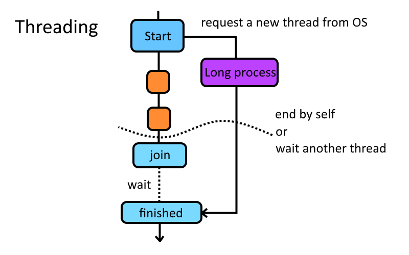

Python 教學 << Previous Next >> 簽章
Python 教學 << Previous Next >> 簽章
控制流程
請學員從下列圖片中的控制流程方法對應 Python 中的語法。
# Condition statement
if condition_1:
# Do for condition 1.
elif condition_2:
# Do for condition 2.
else:
# Do for other case.

# Loops
for i in range(10):
if i == 4:
continue
# Do for 0~9 except 4.
k = 'b'
w = ['a', 'b', 'c', 'd', 'e']
while w: # Condition: 'w' is not empty.
if k == w.pop(): # Remove last one and compare it with 'k'.
break # Stop the loop if k is equal with last one.
print(w) # w = ['a']
# note: "for" loop is syntactic sugar based on "while" loop.
for c in ['a', 'b', 'c']:
if c == 'b':
continue
# Do for 'a'~'c' except 'b'.
i = 0
c_list = ['a', 'b', 'c']
while i < len(c_list): # 'i' is in the range of length of 'c_list'.
c = c_list[i] # Get the value from 'c_list'.
if c == 'b':
continue
# Do for 'a'~'c' except 'b'.
i += 1 # 'i' increase 1.

# Define a function 'func'.
def func(a, b):
c = int(a) # Copy 'a' and turn it to an integer, and save it to 'c'.
if c > 30: # If 'c' is over 30, set it to 30.
c = 30
return b - c # Return a value that obtained by 'b' minus with 'c'.
# Garbage collecting for 'a', 'b', 'c'. Except 'b' - 'c'.
# Use the function.
d = func(27.9705, 50) # 'd' is 23.
d -= func('70', d) # 'd' minus -7, so 'd' will be set to 30.
func(30.5, d) # Return value is 0, but it will be discarded and deleted.
# The following statements are the same in the last line of function.
def f(w):
w.append(w.pop(0))
# No return statement.
def f(w):
w.append(w.pop(0))
return
def f():
w.append(w.pop(0))
return None
# The first is recommended.
延伸閱讀 - 執行緒：
Qt 中的 signal 與 slot 為透過多執行緒配置實現的功能。

Python 教學 << Previous Next >> 簽章